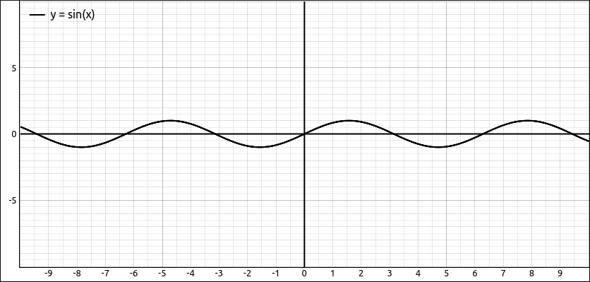
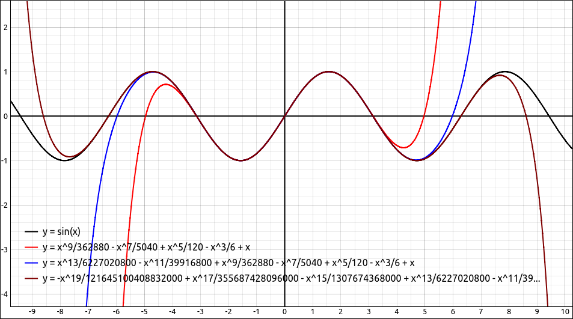
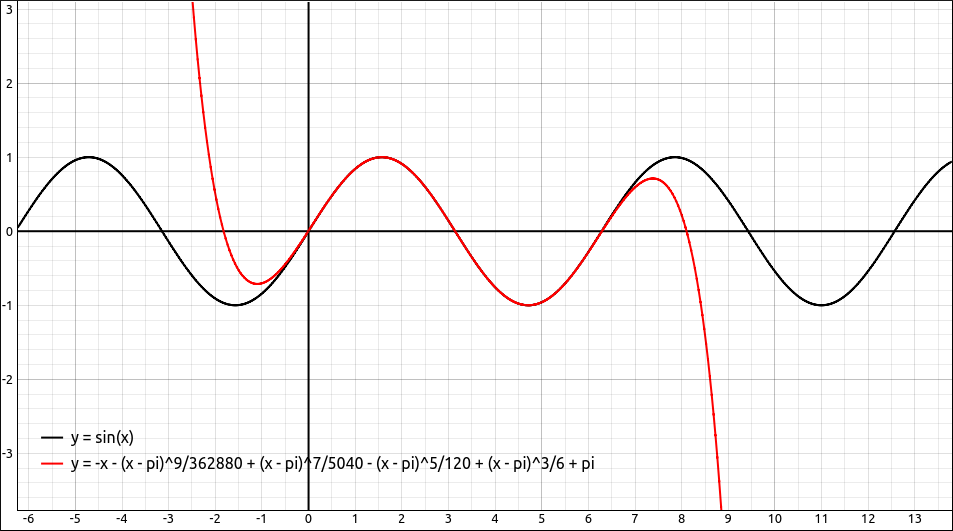
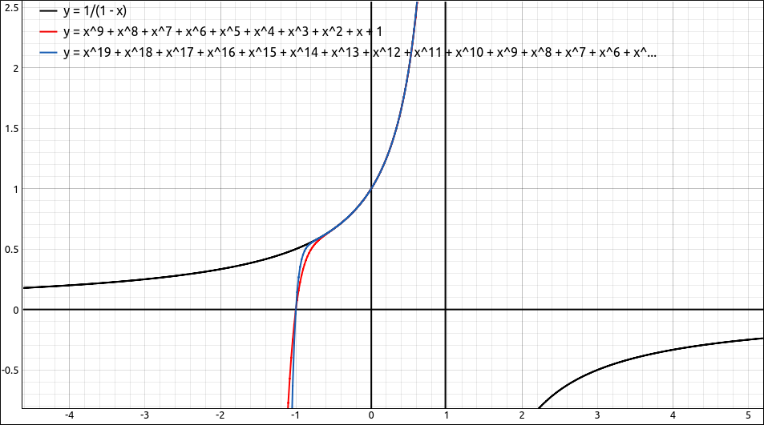

Sequences and Series#
The following options allow the user to investigate concepts in sequences and series.
Sequence Limit#
The Sequence Limit option is for finding the limit of a sequence. When this option is selected a dialog box will appear asking the user to input the variable of interest. There is also a variable assumptions selection at the bottom. For more about variable assumptions see the discussion at the bottom of this page. In most cases you will leave the assumptions alone (everything real) but sometimes you may need to change these. We will look at several examples.
If we have \(\frac{n}{n + 1}\) loaded into the CAS and select
Calculus > Sequence Limit, leavenas the variable and click OK, it returns 1.If we have \(\frac{n!}{n^n}\) loaded into the CAS and select
Calculus > Sequence Limit, leavenas the variable and click OK, it returns 0. Note that \(n!\) is n factorial and is defined for non-negative integers with \(0! = 1\) and \(n! = n(n-1)(n-2) \cdots 1\) for \(n > 0\).If we have \(\left(1 + \frac{1}{n}\right)^{n}\) loaded into the CAS and select
Calculus > Sequence Limit, leavenas the variable and click OK, it returns \(e\).If we have \(\frac{\left(2 n - 1\right)!!}{\left(2 n\right)^{n} }\) loaded into the CAS and select
Calculus > Sequence Limit, leavenas the variable and click OK, it returns 0. Note that \(n!!\) is n double factorial and is defined for non-negative integers with \(0!! = 1\) and \(n!! = n(n-2)(n-4) \cdots 1\) for \(n > 0\).
Note
Do not use the general limit option to find limits of sequences. With sequences there are more assumptions that can be made and different algorithms that need to be used.
Sums#
The Sums submenu contains options for calculating finite and infinite sums as well as an option to test the sum for convergence.
Sum#
This is for finding the exact values of a finite or infinite sum. Note that finding exact values to sums can be computationally intense and in many cases this could take a long time to complete or you may not get a result. When you select this option you will get a dialog asking for the variable to sum over and the lower and upper bounds of the sum. Remember to use oo for infinity and -oo for negative infinity. There is also a variable assumptions selection at the bottom. For more about variable assumptions see the discussion at the bottom of this page. In most cases you will leave the assumptions alone (everything real) but sometimes you may need to change these. We will look at several examples.
If we have \(\frac{1}{2^n}\) loaded into the CAS and select this option, leave
nas the variable, use 1 andoofor the bounds and click OK, it returns 1.If we have \(\frac{1}{2^n}\) loaded into the CAS and select this option, leave
nas the variable, use 1 and 1000 for the bounds and click OK, it returns,
For some fairly nice cases the program will return a partial sum formula. If we have \(\frac{1}{2^n}\) loaded into the CAS and select this option, leave
nas the variable, use 1 and t for the bounds and click OK, it returns \(1 - 2 \cdot 2^{- t - 1}\).The program can handle a variety of sum evaluations, for example a telescoping sum. If we have \(\frac{1}{n \left(n + 1\right)}\) loaded into the CAS and select this option, leave
nas the variable, use 1 andoofor the bounds and click OK, it returns 1.If we have \(\frac{1}{n}\) loaded into the CAS and select this option, leave
nas the variable, use 1 andoofor the bounds and click OK, it returns \(\infty\).As mentioned above, exact sums can be difficult to calculate. If we have \(\frac{n!}{n^n}\) loaded into the CAS and select this option, leave
nas the variable, use 1 andoofor the bounds and click OK, it returns the following, basically that it cannot find the exact sum.
Approximate Sum#
This option will approximate a sum, in other words, allow the user to calculate finite sums numerically. When you select this option you will get a dialog asking for the variable to sum over and the lower and upper bounds of the sum. Here the lower and upper bounds must be integers, you cannot use variables or the infinities. There is also a variable assumptions selection at the bottom. For more about variable assumptions see the discussion at the bottom of this page. In most cases you will leave the assumptions alone (everything real) but sometimes you may need to change these. We will look at several examples.
If we have \(\frac{(-1)^n}{n}\) loaded into the CAS and select the sum option, leave
nas the variable, use 1 andoofor the bounds and click OK, it returns \(- \ln{\left(2 \right)} \approx -0.693147180559945\). If we select this option and use 1 and 1000 for the bounds and click OK, it returns \(-0.6926474305598223\) and if we use 1 and 1000000 for the bounds and click OK, it returns \(-0.6931466805602525\). A fairly slow convergence.In the above example of \(\frac{n!}{n^n}\), the program could not find the exact value of the infinite sum. If we jump ahead to the convergence tests we see that the sum is convergent. So with this option we can get an approximation of the sum. Select this option and use 1 and 100 for the bounds and we get 1.879853862175259. If we rerun this using 150 as the upper bound we get 1.879853862175259, the same approximation. So it is safe to say that the approximate infinite sum is close to 1.879853862175259. Note that if you input 200 as the upper bound you will get an error, this is because there was an overload in the numeric values. Although this is a computer algebra system and does exact arithmetic, when doing approximations you encounter the same numeric limitations as you do in numeric programs.
Test Sum Convergence#
The test of convergence is simply testing the sum expression using many of the convergence and divergence techniques you study in a Calculus class, and some more sophisticated tests. The result is either True or False, or an error if can not determine convergence or divergence. When you select this option you will get a dialog asking for the variable to sum over and the lower and upper bounds of the sum. Remember to use oo for infinity and -oo for negative infinity. There is also a variable assumptions selection at the bottom. For more about variable assumptions see the discussion at the bottom of this page. In most cases you will leave the assumptions alone (everything real) but sometimes you may need to change these. We will look at several examples.
If we test \(\frac{n!}{n^n}\) from 1 to
oowe get True, so the series converges.If we test \(\frac{n!}{2^n}\) from 1 to
oowe get False, so the series diverges.
Products#
Products are usually not studied in introductory Calculus classes we included them here anyway. In most respects these work the same way as with their sum counterparts.
Product#
This is for finding the exact values of a finite or infinite product. Note that finding exact values to products can be computationally intense and in many cases this could take a long time to complete or you may not get a result, which happens more often than with sums. When you select this option you will get a dialog asking for the variable to multiply over and the lower and upper bounds of the product. Remember to use oo for infinity and -oo for negative infinity. There is also a variable assumptions selection at the bottom. For more about variable assumptions see the discussion at the bottom of this page. In most cases you will leave the assumptions alone (everything real) but sometimes you may need to change these. We will look at several examples.
If we have \(\frac{1}{2^n}\) loaded into the CAS and select this option, leave
nas the variable, use 1 andoofor the bounds and click OK, it returns 0.If we have \(\frac{n + 1}{n}\) loaded into the CAS and select this option, leave
nas the variable, use 1 andoofor the bounds and click OK, it returns the following, meaning that it could not calculate the product. This product does diverge but the program could not determine this.
If we have \(\frac{n}{n + 1}\) loaded into the CAS and select this option, leave
nas the variable, use 1 andoofor the bounds and click OK, it returns the sum formula as in the last example, even though the product is 0.
In general, the Product option is not the most useful tool in this program but it is here if you want to use it.
Approximate Product#
This option will approximate a product, in other words, allow the user to calculate finite products numerically. When you select this option you will get a dialog asking for the variable to multiply over and the lower and upper bounds of the product. Here the lower and upper bounds must be integers, you cannot use variables or the infinities. There is also a variable assumptions selection at the bottom. For more about variable assumptions see the discussion at the bottom of this page. In most cases you will leave the assumptions alone (everything real) but sometimes you may need to change these. We will look at several examples.
If we have \(\frac{n + 1}{n}\) loaded into the CAS and select this option, leave
nas the variable, use 1 and 1000 for the bounds and click OK, it returns 1000.9999999999947. If we change the upper bound to 1000000 we get 1000000.9999998641. Although this is far from proof, it does appear that the product is diverging.If we have \(\cos{\left(\frac{\pi}{n} \right)}\) loaded into the CAS and we jump ahead to the convergence test for this product we see that the product does converge to a nonzero value. If we select this option, leave
nas the variable, use 1 and 1000 for the bounds and click OK, it returns \(-7.072970756374111 \cdot 10^{-18}\), 1 to 1000000 gives \(-7.038205097898972 \cdot 10^{-18}\) and 1 to 10000000 gives \(-7.038173839064985 \cdot 10^{-18}\).
Test Product Convergence#
The test for convergence is similar to that for the sum except that it will also return False if the product is 0. From the SymPy documentation:
The infinite product: \(\displaystyle \prod_{1 \leq i < \infty} f(i)\) is defined by the sequence of partial products: \(\displaystyle \prod_{i=1}^{n} f(i) = f(1) f(2) \cdots f(n)\) as n increases without bound. The product converges to a nonzero value if and only if the sum: \(\displaystyle \sum_{1 \leq i < \infty} \log{f(n)}\) converges.
So the determination of the convergence of the product depends on the convergence of the associated sum. If the product is 0 then this sum diverges and the result is returned as False.
When you select this option you will get a dialog asking for the variable to sum over and the lower and upper bounds of the sum. Remember to use oo for infinity and -oo for negative infinity. There is also a variable assumptions selection at the bottom. For more about variable assumptions see the discussion at the bottom of this page. In most cases you will leave the assumptions alone (everything real) but sometimes you may need to change these. We will look at several examples.
If we have \(\cos{\left(\frac{\pi}{n} \right)}\) loaded into the CAS and select this option using 1 and
oowe get True.If we have \(\frac{1}{2^n}\) loaded into the CAS and select this option, leave
nas the variable, use 1 andoofor the bounds and click OK, it returns False. In this case the product is 0.If we have \(\frac{\left(-1\right)^{n} n}{n + 1}\) loaded into the CAS and select this option, leave
nas the variable, use 2 andoofor the bounds and click OK, it returns False. Note that if we start the product at 1 we get an error.
Taylor Series#
This option will return a finite Taylor series expansion of a function. When you select this option a dialog box will appear asking the user for the variable to expand over, the point to expand about, and the order of the Taylor polynomial to calculate. There is also a variable assumptions selection at the bottom. For more about variable assumptions see the discussion at the bottom of this page. In most cases you will leave the assumptions alone (everything real) but sometimes you may need to change these.
The order must be finite for this program and the expansion point can be any valid expression including CAS entries. We will look at several examples.
Example: Taylor Series Expansion of \(\sin(x)\)#
This option is nice for showing convergence of the Taylor Series to a function as well as intervals of convergence when you also use the graphics systems. Start with \(\sin(x)\) in the CAS and graph it.

\(y = \sin{\left(x \right)}\)#
Select this option use 0 for the expansion point and order 10, the result is,
Now select this option use 0 for the expansion point and order 15, the result is,
Now select this option use 0 for the expansion point and order 20, the result is,
Graph these three polynomials along with \(\sin(x)\) and we see,

\(y = \sin{\left(x \right)}\) and Taylor Polynomials#
This gives a nice feeling about the convergence of the Taylor Series and the function \(\sin(x)\).
Now expand the series about \(\pi\), just use pi for the point, use order 10 as well. This gives,
and if we graph this along with the curve we get,

\(y = \sin{\left(x \right)}\) and Taylor Polynomial#
Example: Taylor Series Expansion of \(\frac{1}{1-x}\)#
Another standard example in Calculus is the Taylor Series expansion of \(\frac{1}{1-x}\). Input \(\frac{1}{1-x}\) into the CAS and find the order 10 and order 20 Taylor series for this function centered at 0. You should get
and
Graphing the function along with the two Taylor Series above gives,

\(y = \frac{1}{1-x}\) and Taylor Polynomials#
This should give the student a good feel that the series converge to the function in the interval \((-1, 1)\) but there are some problems outside that interval.
Variable Assumptions#
Assumptions#
Assumptions about variables are essentially what type of number does the variable represent. In most cases in an introductory Calculus sequence you simply assume that all variables represent real numbers, and sometimes complex numbers. The default setting for variables is as a real number except for solving equations where we use complex numbers.
As a classic example, say we input sqrt(x^2) into the CAS, the entry would be displayed as,
If we select Algebra > Simplify, a simplification that makes no assumptions about the variables, the result is still,
But if we use Algebra > Special Simplifications, leave the settings as is, and click OK the result is,
The difference is that the default domain for x in the Special Simplifications dialog was a real number. In the real number system, \(\sqrt{x^{2}} = \left|{x}\right|\) but in the complex number system it is not. For example, \(\sqrt{i^{2}} = -1 \neq \left|{i}\right| = 1\).
Another classic example is in the study of l’Hospital’s Rule. Marquis de l’Hospital published the very first Calculus textbook in 1696, where l’Hospital’s Rule is first seen in print. l’Hospital did not discover this rule, the Swiss mathematician John Bernoulli (1667–1748) is the one who discovered the method. l’Hospital and Bernoulli had an interesting business relationship where l’Hospital purchased the rights to this method, which is why it is named after him and not Bernoulli. In his book l’Hospital wanted to calculate,
which is a \(\frac{0}{0}\) indeterminate form and hence can be attacked using l’Hospital’s Rule. This expression also assumed that \(a > 0\).
If we put this expression into our CAS (-a*(a^2*x)^(1/3) + sqrt(2*a^3*x - x^4))/(a - (a*x^3)^(1/4)), then select Calculus > Limit, when the limit dialog comes up input x for the variable and a for the limit point, and click OK. The result will be,
It should be fairly obvious that this does not work for a being a positive real number since the denominator is clearly 0 in this case. This time when we select Calculus > Limit we will change the data type of a to be a positive real, and leave x alone. This time the result is the correct answer for these assumptions of,
In the vast majority of cases you will not need to do anything with variable assumptions. The reason we incorporated the ability to specify assumptions about the variable data type is that in a few instances (like in the above examples) you may need to tell the program that variable belongs to a more restrictive domain.
Assumptions User Interface#
The variable assumptions user interface will look like one of the two following layouts.

Variable Properties User Interface#
or

Variable Properties Editor User Interface#
If it is the first of these then clicking the Edit Variable Properties button will open a dialog box with the second interface. The second is where the changes are made. In either of these each variable in the expression is listed with the data type we are assuming it belongs. In the second interface you can edit the domain by first selecting the variable from the list and then selecting its type by clicking on it.
The reason we included the first interface was that it was less intimidating and easier to accept as is,which is what the user will do in most cases. As noted above these assumptions do not need to be changed very often.